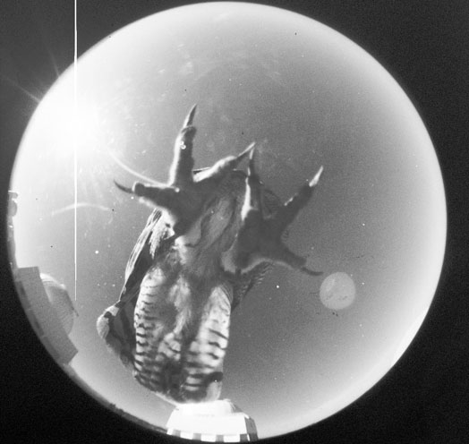

There are many other great educational tools that teach about constellations. To learn more use any of the online resources listed below.
Breaking News! Another Constellation Discovered!
Below is a picture of the newest member of the constellation family, Ollie the Owl!
According to the NASA website, Ollie took the place of Wrinkles the Rhinoceros in the night sky.
At least that's what the experts at NASA posted on April Fool's Day in 2003.
